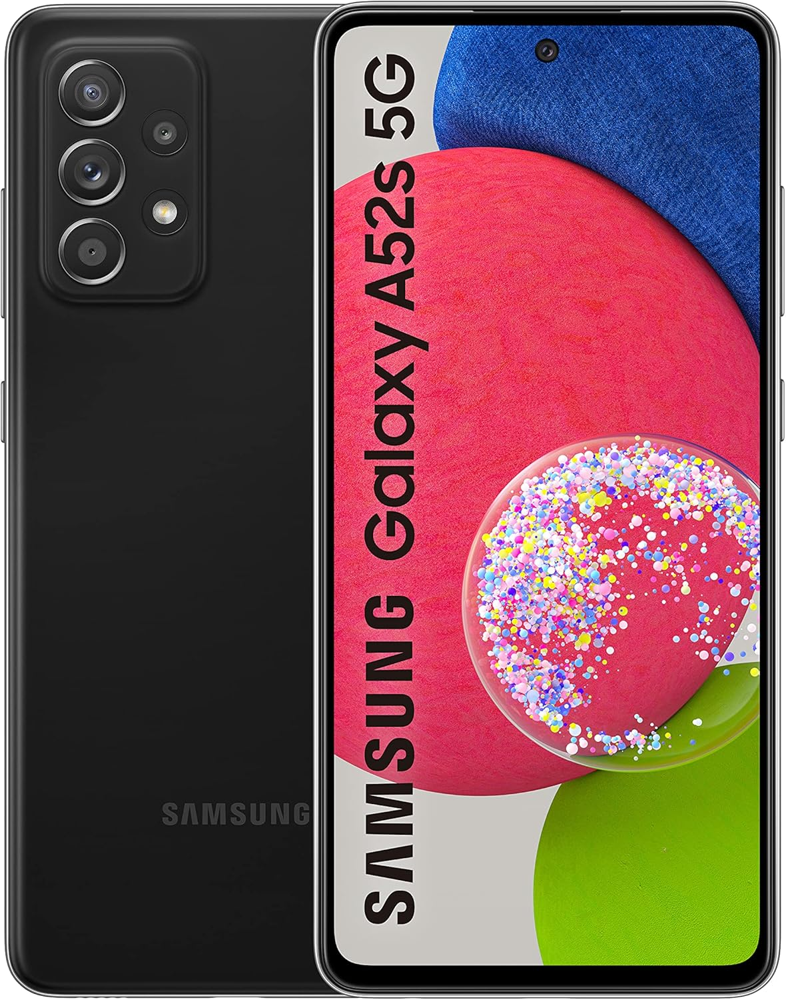
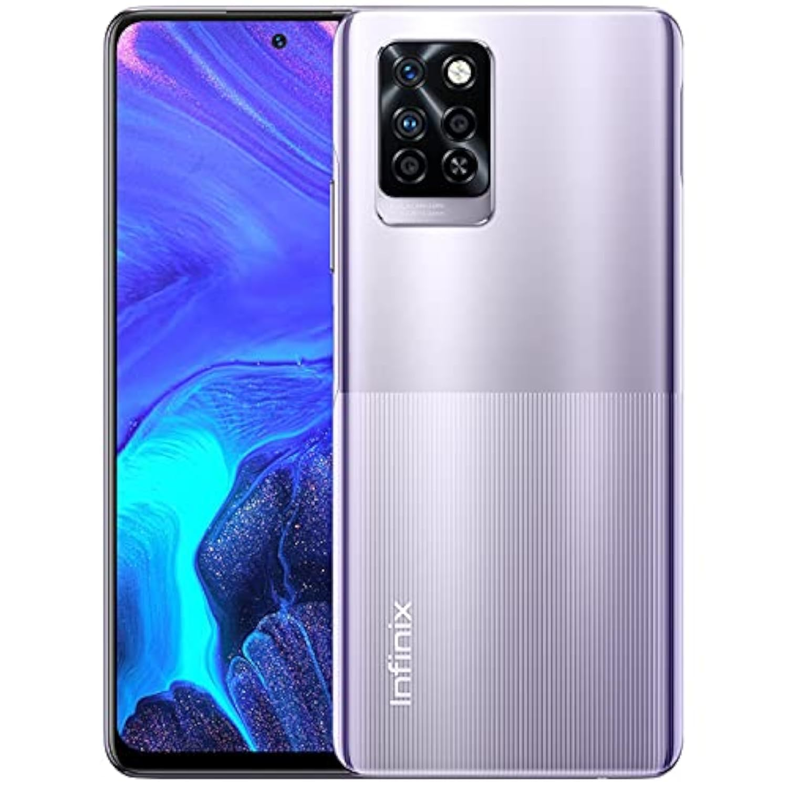
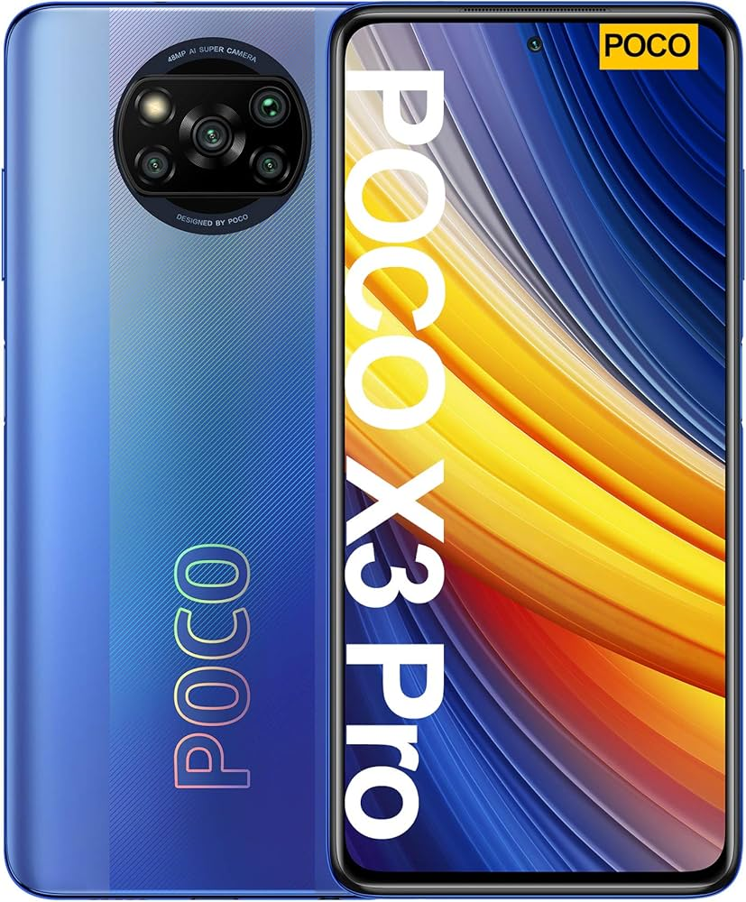
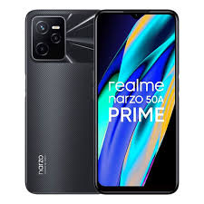
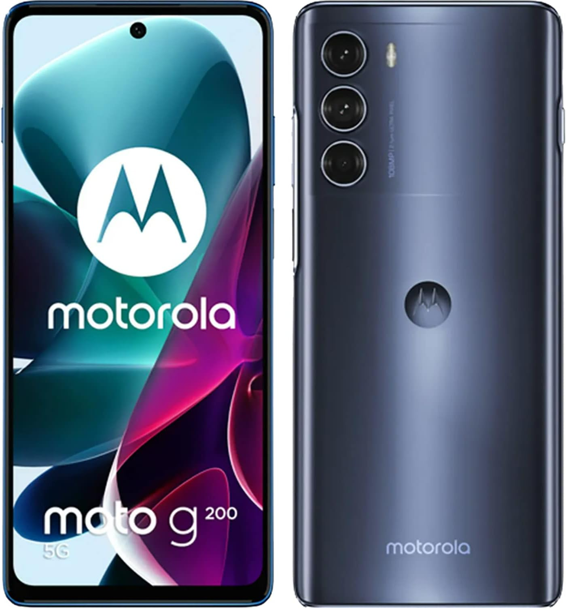

El Realme 8i es un teléfono económico que ofrece un buen rendimiento para juegos ligeros y medios. Su procesador MediaTek Helio G96 junto con una pantalla de 6.6 pulgadas y tasa de refresco de 120 Hz, lo hace atractivo para los jugadores que buscan un dispositivo accesible..
Especificaciones:
Procesador: MediaTek Helio G96.
Pantalla: 6.6" IPS LCD, 120 Hz.
RAM: 4 GB / 6 GB.
Almacenamiento: 64 GB / 128 GB.
Batería: 5000 mAh, carga rápida de 18W.

Samsung Galaxy A52s 5G
Descripcion:
Aunque el Galaxy A52s no está diseñado específicamente para juegos, su procesador Snapdragon 778G ofrece un rendimiento eficiente para títulos exigentes en gráficos de gama media. La pantalla Super AMOLED con tasa de refresco de 120 Hz también mejora la experiencia visual.
Especificaciones:
Procesador: Qualcomm Snapdragon 778G.
Pantalla: 6.5" Super AMOLED, 120 Hz.
RAM: 6 GB o 8 GB.
Almacenamiento: 128 GB / 256 GB.
Batería: 4500 mAh, carga rápida de 25W.

Xiaomi Mi 11 5G
Descripcion:
Con el procesador MediaTek Helio G95 y una pantalla de 6.95 pulgadas con tasa de refresco de 90 Hz, el Infinix Note 10 Pro ofrece una experiencia de juego bastante buena en su rango de precio. Además, tiene una batería de 5000 mAh, suficiente para sesiones de juegos largas.
Especificaciones:
Procesador: MediaTek Helio G95.
Pantalla: 6.95" IPS LCD, 90 Hz.
RAM: 6 GB / 8 GB.
Almacenamiento: 64 GB / 128 GB.
Batería: 5000 mAh.

Xiaomi Poco X3 Pro
Descripcion:
Este modelo es uno de los más populares en la gama media para juegos. Tiene el procesador Snapdragon 860, que, aunque no es el más reciente, ofrece un rendimiento sólido para la mayoría de los juegos. Cuenta con una pantalla de 6.67 pulgadas con una tasa de refresco de 120 Hz, ideal para una experiencia fluida de juego.
Especificaciones.
Procesador: Qualcomm Snapdragon 860.
Pantalla: 6.67" IPS LCD, 120 Hz.
RAM: 6 GB o 8 GB.
Almacenamiento: 128 GB.
Batería: 5160 mAh, carga rápida de 33W.

Realme Narzo 50A Prime
Descripcion:
Aunque no está diseñado específicamente como un teléfono gaming, el Realme Narzo 50A Prime tiene un buen rendimiento para juegos casuales debido a su procesador MediaTek Helio G85 y su gran batería de 5000 mAh. Es una opción accesible para quienes no quieren gastar mucho.
Especificaciones:
Procesador: MediaTek Helio G85.
Pantalla: 6.6" IPS LCD, 60 Hz.
RAM: 4 GB.
Almacenamiento: 64 GB / 128 GB.
Batería: 5000 mAh.

Motorola Moto G200 5G
Descripcion:
Con un Snapdragon 888, este teléfono ofrece un rendimiento cercano al de los modelos más caros, pero a un precio mucho más accesible. Tiene una pantalla Full HD+ de 6.8 pulgadas con tasa de refresco de 144 Hz, lo que lo hace muy adecuado para juegos fluidos.
.jpg)